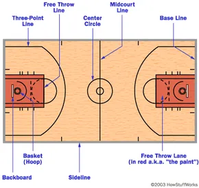

Home Page

- 
Introduction to Basketball:
Basketball is a fast-paced, dynamic sport that has gained widespread popularity around the world. It is particularly beloved in countries such as the United States, Spain, China, and Lithuania. The game is played between two teams, each consisting of five players, who compete to score points by shooting a ball through the opponent's hoop.
The action takes place on a rectangular court with a hoop at each end. The objective is to throw the ball through the opposing team's hoop, situated ten feet above the ground, while also defending their own basket to prevent the opposing team from scoring. The team with the most points at the end of the game emerges victorious.
During a basketball game, players employ a combination of dribbling, passing, and shooting skills. The court is divided into two main areas: the frontcourt, where a team's offensive plays unfold, and the backcourt, where defensive strategies come into play. The shot clock, a timer that limits each possession's duration, adds an element of urgency to the game.
Teams compete in four quarters, each lasting a set amount of time. The fast-paced nature of basketball, coupled with frequent lead changes, ensures an exciting and engaging experience for both players and fans.
Basketball is played in various leagues and tournaments globally, with the National Basketball Association (NBA) serving as one of the premier professional leagues. Other noteworthy competitions include international events like the FIBA Basketball World Cup and the Olympic basketball tournament.
The sport has transcended geographical boundaries, capturing the hearts of fans in the Americas, Europe, Asia, and beyond. Its universal appeal and thrilling gameplay make basketball a truly global sensation.